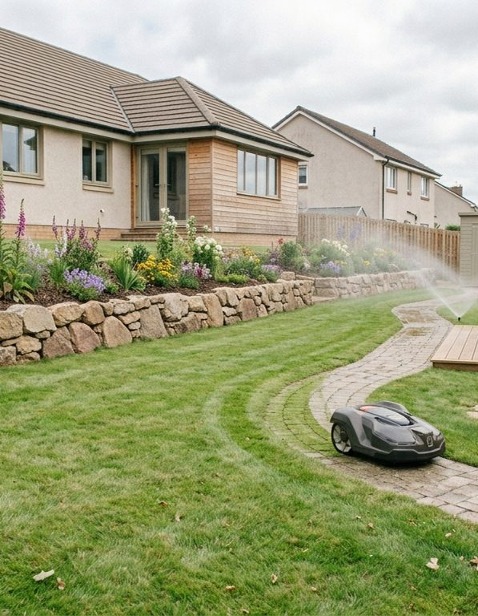
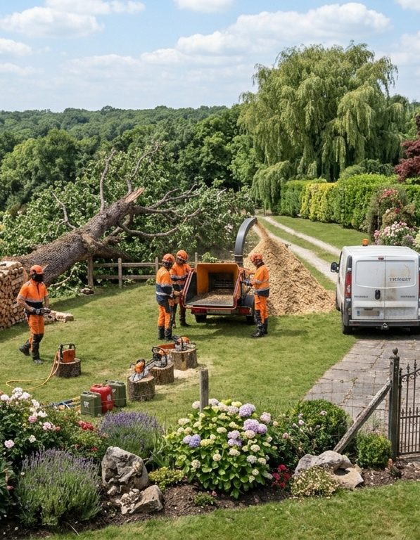
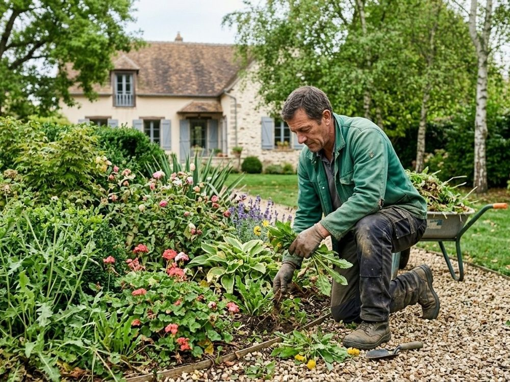
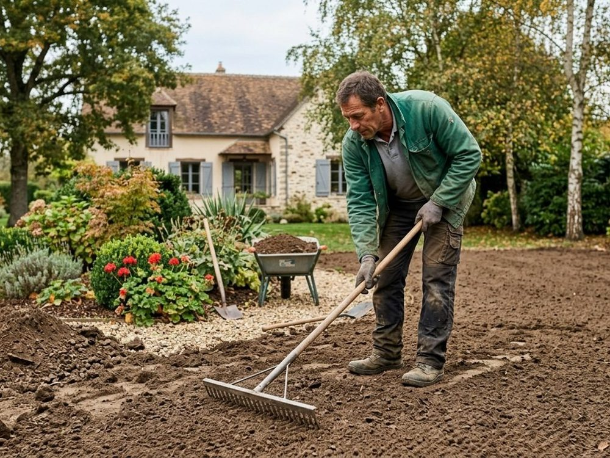
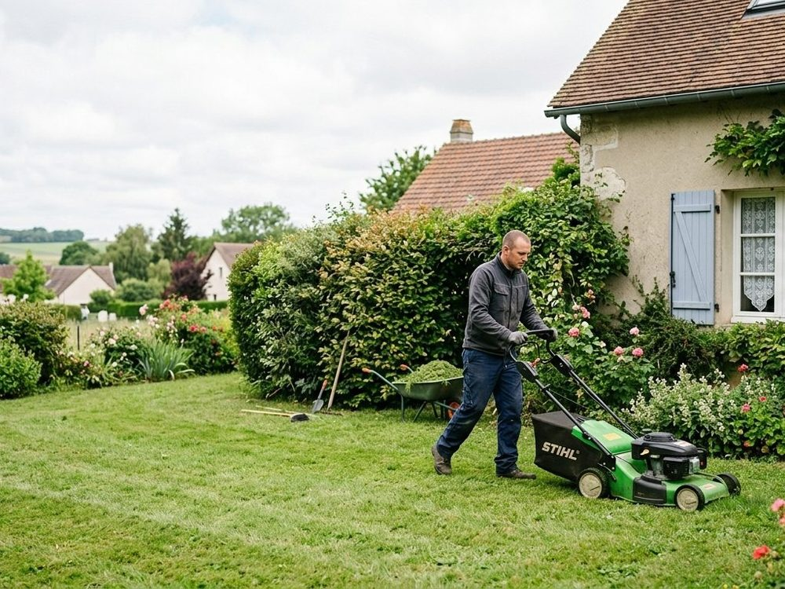
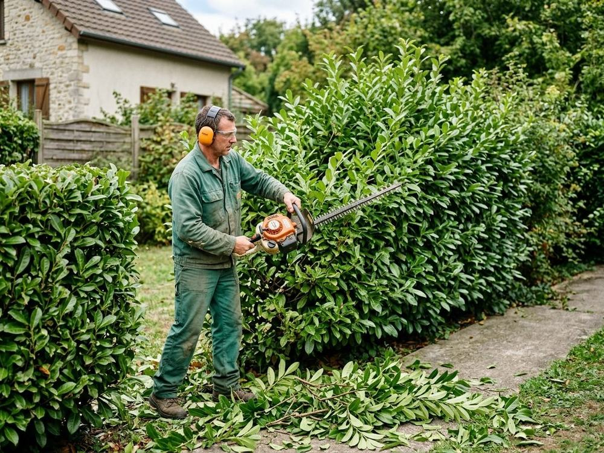

01
01Création de jardins
Massifs, pelouses et allées : l'aménagement se pense selon votre terrain.
En savoir plus →Paysagiste à Rambouillet (78)
Mark Tracy aménage et entretient vos jardins à Rambouillet et aux alentours.



Nos prestations
Cinq domaines d'intervention pour vos espaces verts.
01Massifs, pelouses et allées : l'aménagement se pense selon votre terrain.
En savoir plus →
02
03
04
05À propos
Mark Tracy est paysagiste, installé à Rambouillet, dans les Yvelines. Contactez-le pour parler de votre jardin et demander un devis.
Mark Tracy, dirigeant
Contact
Appelez-nous pour décrire votre projet et demander un devis.
06 12 27 34 40Création et entretien de jardins à Rambouillet (78).
© Mark Tracy · Maquette de démonstration